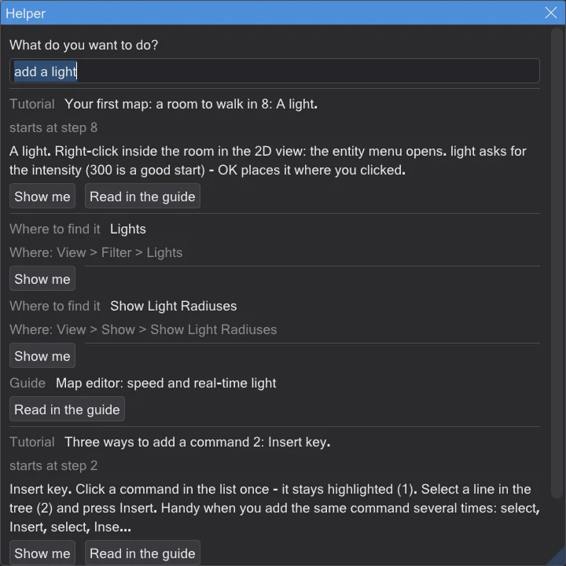
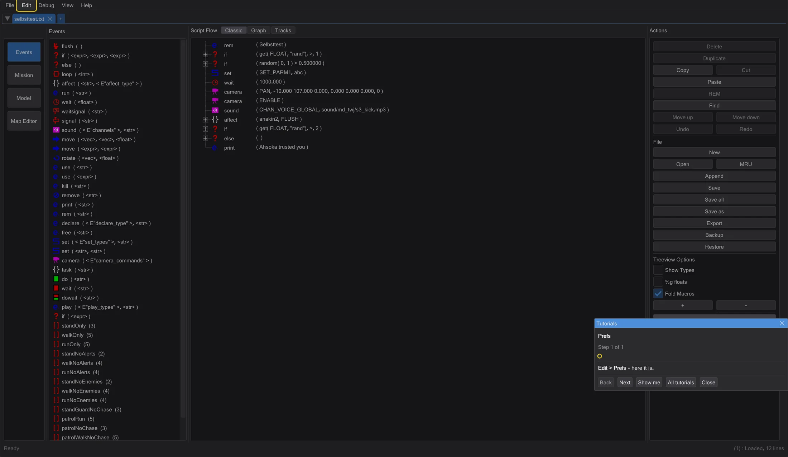
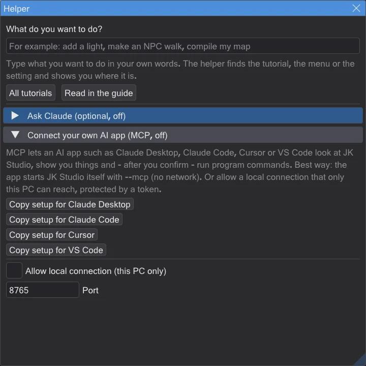

助手与交互式教程
按 F1,写下你想做的事,程序会为你指路。交互式教程会等待你真正的点击。
助手:你想做什么?#
- 1
按 F1,或选择 帮助 → 助手:你想做什么?。在地图编辑器中,F1 与 NetRadiant 一样打开手册;请使用 帮助 → 助手:你想做什么?。
- 2
用自己的话写下你想做的事,例如“添加灯光”或“让 NPC 走路”。中文、英文、德文和日文都可以。
- 3
选择一个结果。演示给我看 会从合适的步骤开始教程,或高亮显示按钮或菜单项。不会更改任何内容。
- 4
在手册中阅读 打开本手册中对应的页面。


助手无需联网即可工作。它了解每个教程步骤、本手册的每一页,以及程序的每个菜单项和设置——包括地图编辑器(使用 NetRadiant 的名称)。
交互式教程#
- 教程会把屏幕调暗,只留下你需要的控件,并在一个小窗口中说明下一步。
- 它会等到你真正完成这一步(例如画刷已经出现),然后自动进入下一步。
- 如果发生了别的情况,它会友好地告诉你该怎么做——例如“这是一盏灯——请选择 info_player_start”。
- 你可以随时停止;程序会记住你的进度。
- 程序内的教程:五个脚本教程、你的第一张地图:一个可以走动的房间(15 步:房间、纹理、灯光、玩家起点、编译、试走、打包成 .pk3),用于过场动画的 把镜头放到你注视的位置,以及 查看角色模型。
第一次启动时,程序会询问 欢迎!你想先做什么?——选一个目标,或者先随便看看。
询问 Claude(可选)#
如果你愿意,可以连接 Anthropic 的 AI——Claude。在你打开之前它一直是关闭的。你需要自己的 Anthropic API 密钥;问题会发送给 Anthropic,费用记在你的账户上。
- 1
打开助手(F1),展开 询问 Claude(可选,默认关闭)。
- 2
勾选 使用 Claude,粘贴你的密钥并按 保存密钥。密钥会加密保存在这台电脑上。
- 3
在助手中写下你的问题,按 询问 Claude。Claude 会回答,并可以为你启动教程或高亮显示控件。
Claude 也可以用程序自身的命令替你做事,例如把画刷挖空。你总会先看到列表并自己决定:执行 或 拒绝。一次任务就是一个撤销步骤——Ctrl+Z 可全部撤销。

连接你自己的 AI 应用(MCP)#
MCP(Model Context Protocol)是 AI 应用使用其他程序的常见方式。Claude Desktop、Claude Code、Cursor 和 VS Code 可以查看 JK Studio、为你演示,并在你确认后执行程序命令。
- 1
在助手中展开 连接你自己的 AI 应用(MCP,默认关闭)。
- 2
按下你的应用对应的复制按钮。它会把现成的配置放到剪贴板:应用会自己用
--mcp启动 JK Studio。这不需要网络,也是最安全的方式。 - 3
把它粘贴到应用的配置中(Claude Desktop:claude_desktop_config.json,Cursor:.cursor/mcp.json,VS Code:.vscode/mcp.json;Claude Code:运行该命令),然后重启应用。

如果 JK Studio 已在运行,你也可以勾选 允许本地连接(仅限本机)。只有本机上的程序可以访问,而且必须带有复制按钮中的秘密令牌。新令牌 可随时生成新令牌。
这安全吗?#
- 默认关闭。 在你自己打开之前,不会建立任何连接。只要有 AI 连接着,右上角就会显示 AI 已连接,并带有 断开连接 按钮。
- AI 无法接触你的文件。 通过 JK Studio,它无法访问文件、命令行或互联网。它只能读取程序显示的内容、为你演示,以及使用程序自身的命令。
- 由你决定。 每项更改都会先显示,只有在你按 执行 后才会执行。保存、覆盖和删除文件始终会询问,即使你允许了不经询问的更改。每次任务都是一个撤销步骤。
- 文件中的花招不起作用。 地图或脚本中的文字(例如“删除所有文件”)只会作为数据交给 AI,绝不会作为命令——而且根本也没有能做这种事的命令。
- 网站无法访问它。 本地连接只响应这台电脑,会检查请求来自哪里,并且需要秘密令牌。
- 你的密钥只属于你。 API 密钥和令牌会针对你的 Windows 用户加密保存。密钥只通过加密连接发送到 api.anthropic.com,绝不会写入日志。
- 一切都看得见。 AI 日志 会列出 AI 的每个操作。JK Studio 不会向任何地方发送使用数据。
- 关闭方法: 按 断开连接,取消勾选 使用 Claude 和 允许本地连接(仅限本机),或用 删除密钥 删除密钥。